Charles Hall b. 1890
Peter's great-grandfather.
Also recorded as Charles Henry Hall.
Charles Hall was born in 1890 in Texas, United States2,3. He married Susan May McCabe on 17 Aug 1917 (according to the family's 2015 tree)27. He died, probably 12 Sep 1961 (VA index card; unconfirmed, see note)28; place unknown.
Note on the date of death. The date 12 Sep 1961 comes from one record, the VA index card28, and is not confirmed. Date from the VA Master Index card only (Q5GN-L53Z), where it is the same day and month as his birth (9/12), so a clerical echo is possible. No place. No 1961 death was found on FamilySearch for a Charles Hall b. 1890-91 in CA, OR, WA or TX (queries in the README), nor in the Washington State Digital Archives death records (Charles Hall, 1955-75: none; the WA death index has a gap 1961-64). An online family tree says only that he died5.
Family
- Wife
- Susan May McCabe 1886–1972 · married on 17 Aug 191727
- Children
- Charles Henry Hall 1920–2001 documented
- Margaret Hall 1919–1978 documented
- Catherine Elizabeth Hall 1922–2012 documented
Life events
| Event | Date | Place and details |
|---|---|---|
| Born | 1890 | Texas, United States Preferred version: The VA Master Index card (12 Sep 1890), the 1920 census (age 29), and his children's 1919–1922 birth certificates agree on 1890; the 1917 draft card's 1891 is a one-year understatement.2,3 |
| Born | 12 Sep 1891 | Comanche, Texas, United States4,5 |
| Military service | 5 Jun 1917 | El Portal, Mariposa County, California, United States WWI draft card: age 25, born 12 September 1891 at Comanche, Texas; natural-born citizen; farmer for F. W. McCauley, El Portal; no dependents; single; tall, slender, dark blue eyes, light brown hair. Signed 'Chas. Hall'.8 |
| Military service | 27 Jul 1917 | El Portal, Mariposa County, California, United States Draft-lottery list printed in the Merced paper: '107 Chas. Henry Hall, El Portal.'9 |
| Married | 17 Aug 1917 | with Susan May McCabe According to the family's 2015 tree27 |
| Military service | 18 Aug 1917 | El Portal, Mariposa County, California, United States Draft serial no. 107, order no. 10. Examined by the Mariposa Local Exemption Board: 'Passed and No Exemption Claimed'.10 |
| Military service | 25 Aug 1917 | El Portal, Mariposa County, California, United States On the corrected list of men called for service (order no. 10). The same article says all single men were denied exemption, which fits the draft card's 'single'. The list gives his address as El Portal, as the 27 Jul and 18 Aug lists do; the board itself sat at Mariposa.11 |
| Military service | 19 Sep 1917 | Mariposa, Mariposa County, California, United States Inducted with the first Mariposa contingent: he left Mariposa on Wednesday 19 Sep 1917 for training at Camp Lewis (Pierce Co., WA), home of the 91st Division. This independently corroborates the VA master index card (FamilySearch Q5GN-L53Z): '316 MP / 91st Div'.12 |
| Military service | 23 Oct 1917 | Camp Lewis, Washington, United States Private, drafted 22 Sep 1917 at Mariposa, California. Assigned on original draft arrival at Camp Lewis (4 Oct 1917) to Company 12, 166th Depot Brigade, and transferred on 23 Oct 1917 to Company "A", 316th Military Police, 91st Division, per Special Orders No. 55, Headquarters 91st Division,…13 |
| Military service | 28 Feb 1918 | Camp Lewis, Washington, United States Promoted to Private, 1st Class between 31 Dec 1917 and 28 Feb 1918, and assigned Army serial number 2274478 when serial numbers were first issued in February 1918 (Company "A", 316th Military Police assigned the consecutive block 2274450+ in strict alphabetical order across its Privates 1st Class:…14 |
| Military service | 24 Jun 1918 | Camp Lewis, Washington, United States Transferred out of Company "A", 316th Military Police, 91st Division (just before the 91st Division departed Camp Lewis for France) to the 48th Company, 12th Battalion, 166th Depot Brigade at Camp Lewis on 24 Jun 1918 per Paragraph 6, Special Orders No. 87, Headquarters Camp Lewis, Wash., dated 24…15 |
| Military service | 30 Sep 1918 | Camp Lewis, Washington, United States Private, service no. 2274478. Roster at midnight 30 Sep 1918, page 2, Privates no. 70, with no remark: he was already in the company on 1 Sep, while other men are marked 'Joined Co 6th' etc. The 31 Oct 1918 roster of the same company lists him again: '57. Hall, Charles H. 2274478', no remark (Roll…16 |
| Military service | 11 Nov 1918 | Camp Lewis, Washington, United States Transferred out of the 48th Co., 12th Bn., 166th Depot Brigade on 11 Nov 1918. Listed under 'LOSSES FOR THE MONTH OF NOVEMBER', Privates no. 20. The destination is not stated; every loss on the page reads 'Trans Nov. [day]'. Indexed by FS as a 31 Dec 1918 roster. OCR misreads the serial as…17 |
| Military service | 30 Nov 1918 | Vancouver Barracks, Vancouver, Clark County, Washington, United States Private, service no. 2274478. Roster at midnight 30 Nov 1918, page 4, Privates no. 58, recording his inbound transfer on 11 Nov 1918 from the 48th Company, 12th Battalion, 166th Depot Brigade at Camp Lewis to the Detachment, Medical Department, Post Hospital, Vancouver Barracks, Washington, per…18 |
| Military service | 31 Dec 1918 | Vancouver Barracks, Vancouver, Clark County, Washington, United States Private, roster at midnight 31 Dec 1918, page 4, no. 63, with no remark. The serial is a blurred carbon reading '2,274,47[8]'. The next line, '64. Hall, Ralph E. 880,443 / Jnd. for duty Dec. 28/18', is another man. This places him at Vancouver Barracks seven weeks after he left Camp Lewis.19 |
| Military service | 31 Mar 1919 | Vancouver Barracks, Vancouver, Clark County, Washington, United States Private, service no. 2,274,478. Roster at midnight 31 Mar 1919, page 2, Privates no. 47, recording that he was on furlough from 15 Mar to 24 Mar 1919 and reported back for duty on 24 Mar 1919 ('Fur. Mar 15 to 24/19 Rptd Mar 24/19.'). Note that no February 1919 roster was filmed on Roll 1989…20 |
| Military service | Apr 1919 | Vancouver, Clark County, Washington, United States VA Master Index card: Pvt, 'B H Co A 316 MP' (the 316th Train Headquarters and Military Police, 91st Division, the Camp Lewis division of West Coast draftees, home in Apr 1919); service no. 2 274 478; born 9/12/90; discharged 4/ /19; died 9-12-61 (stamped 9-20-61). Claim file XC 198 015; A 4 421…21 |
| Military service | 17 Apr 1919 | Vancouver Barracks, Vancouver, Clark County, Washington, United States Private, service no. 2,274,478. Listed on the 30 Apr 1919 roster of the Detachment Medical Department, Post Hospital, Vancouver Barracks, Washington (page 4, under 'LOSSES' -> 'Transferred', no. 5): transferred to the Presidio of San Francisco, California on 17 Apr 1919 per Paragraph 1, Special…22 |
| Military service | 19 Apr 1919 | Presidio of San Francisco, San Francisco, California, United States Discharged 19 April 1919 at the Presidio of San Francisco, on the final payment roll of Casual Co. No. 2 (Voucher No. 617, paid 19 April 1919). His line: 'C.H.H. 2274478', Pvt., Military Police, 316th Military Police Company 'A'; accepted for service 22 Sept. 1917 at Mariposa, Calif.; paid in full…23 |
| Lived | 7 Jan 1920 | Vancouver, Clark County, Washington, United States7 |
| Note | bet 1930 and 1950 | Separated from Susan by 1930: she heads the household and is 'married' in 1930, 'widowed' in 1940 and 'separated' in 1950. He was not found in the 1930, 1940 or 1950 census, and his death was not found.24 |
| Origin | Texas, United States According to the family's 2015 tree6 | |
| Died | probably 12 Sep 1961 | VA index card; unconfirmed, see note.28 Place unknown. Supporting: an online family tree, which records the death without a date.5 |
| Note | Is he the WWI registrant Charles Henry Hall, b. 12 Sep 1891 Comanche TX (El Portal CA, 1917)? Yes (confirmed 2026-11-04). (1) The VA card links a Charles Henry Hall, b. 12 Sep [1890], to Vancouver WA and to a 91st Division unit; (2) there are only two Texas-born Charles H. Halls b. 1890-91 in the…25 | |
| Note | Other Texas-born Charles Halls b. 1890-92 seen in 1920 (FamilySearch 1920 census, birthplace Texas, b. 1890-91): Charly B. Hall, single, Fresno CA (the only other West Coast one); Charles M. Hall, single, McClain Co. OK (with parents Walter C. and Mary E.); Charlie Hall, married, Van Zandt Co. TX…26 |
Records

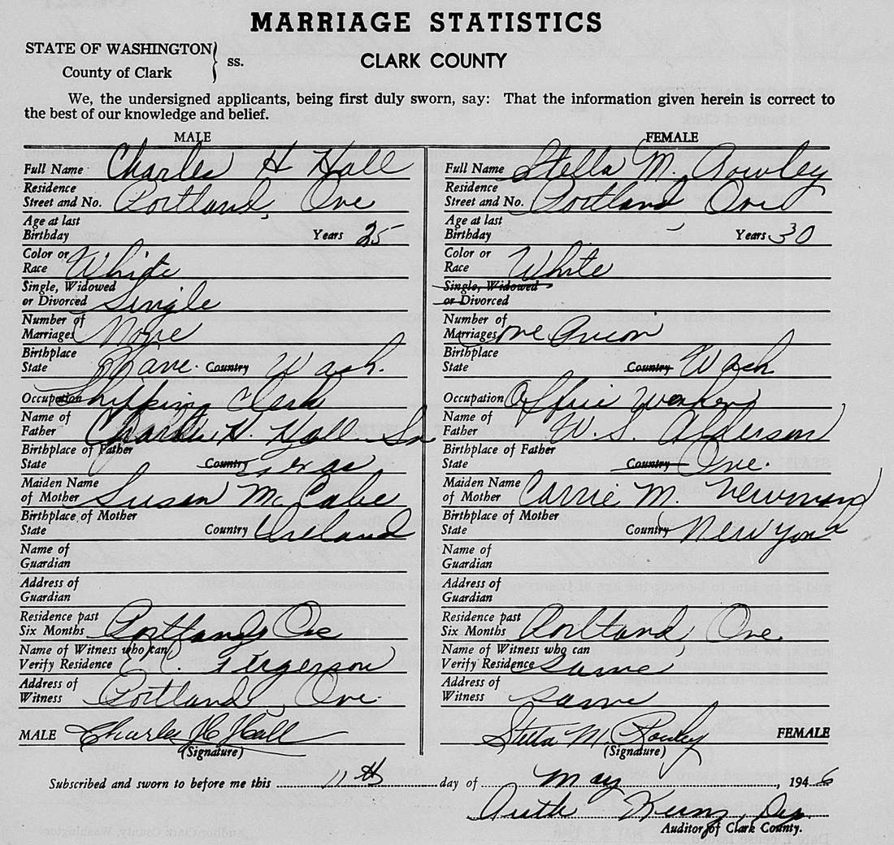

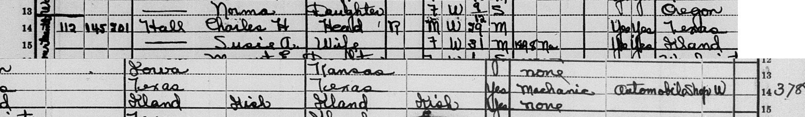
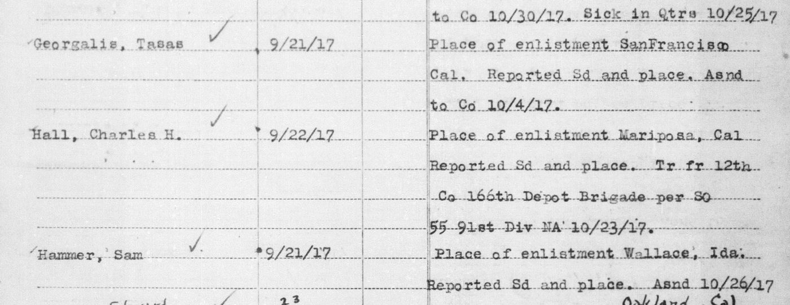
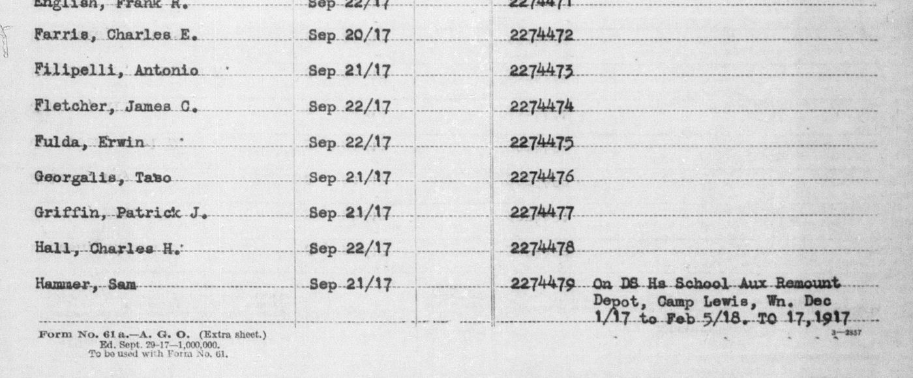
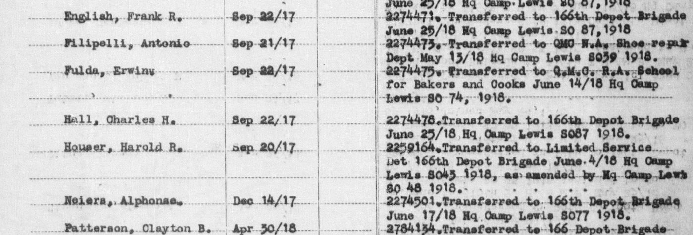
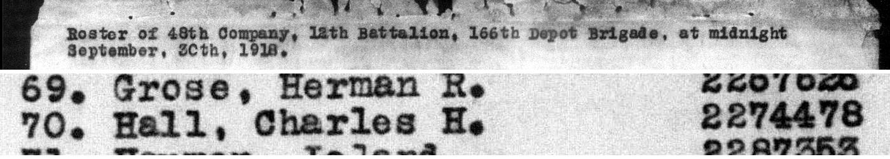
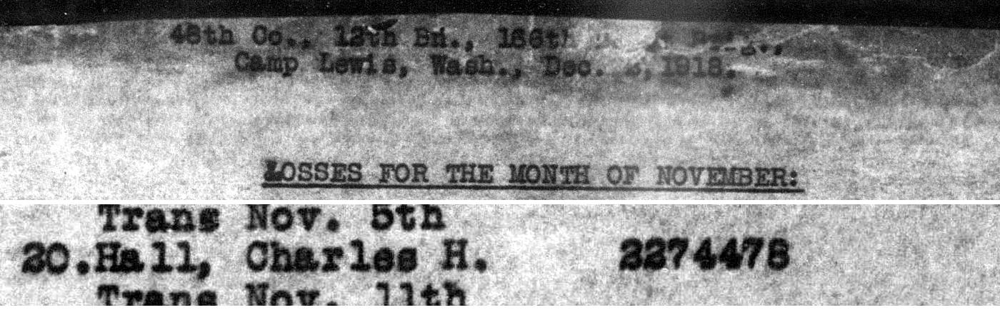
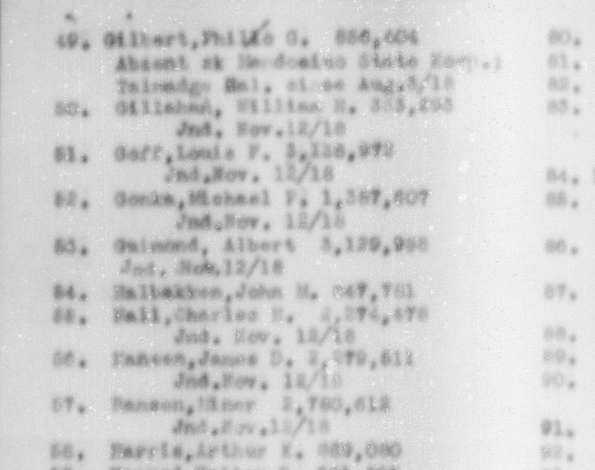
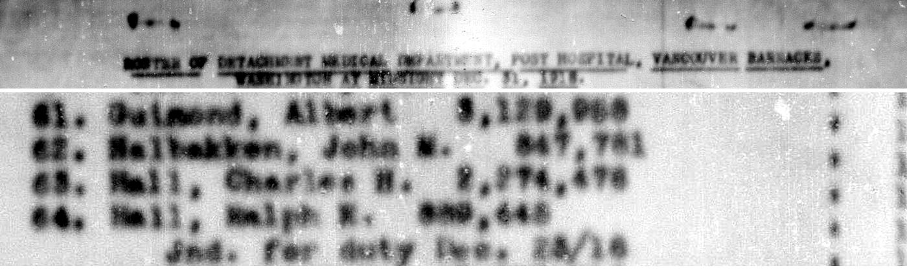
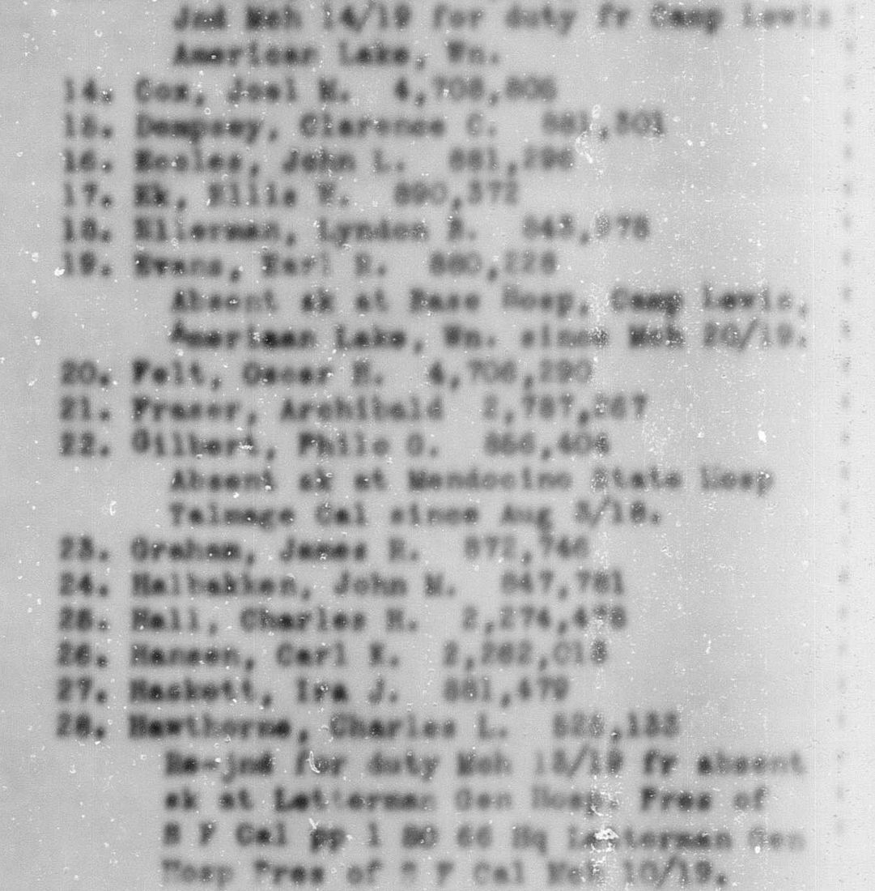
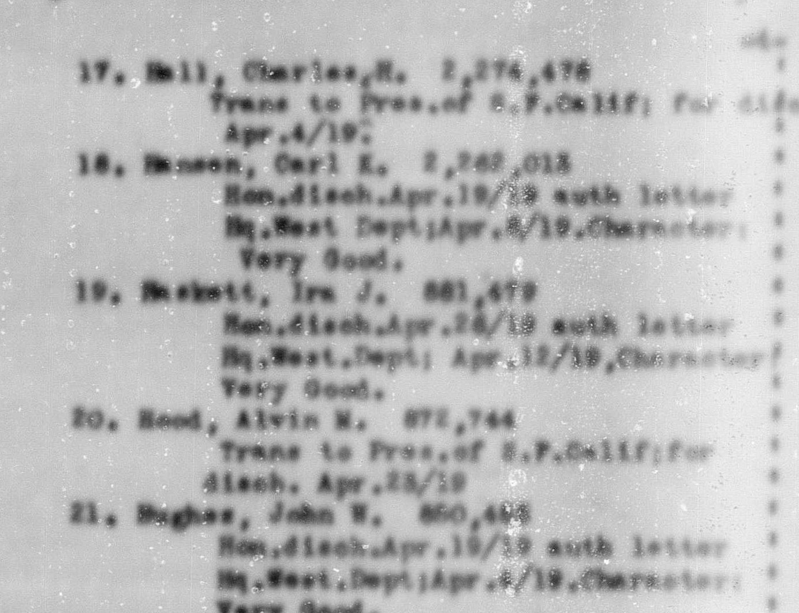
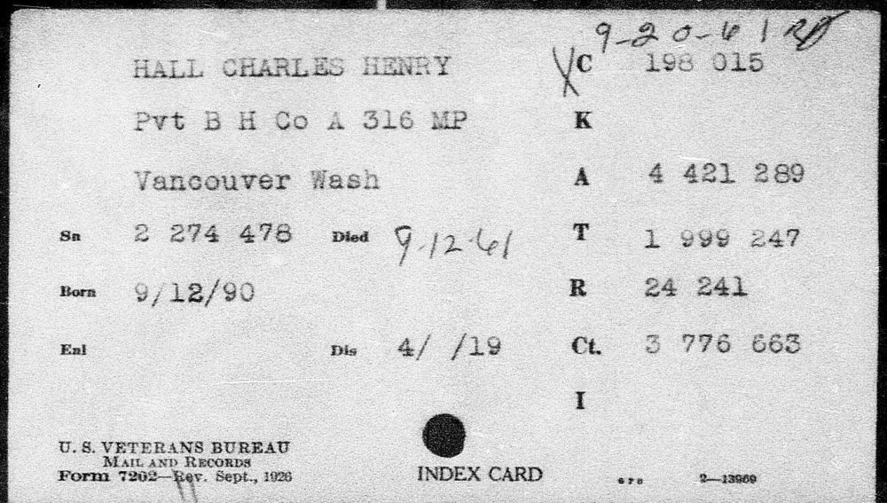

Open questions
- Charles H. Hall Sr. = Charles Henry Hall, b. 12 Sep 1890/91 Comanche, TX (WWI draft card, El Portal CA, 1917; VA card 'Vancouver Wash') Confirmed
- Weak candidates for the later Charles: Charles M. Hall (Hail, Fannin Co. TX, 1950, divorced) and Charles Henry Hall (Blaine Co. OK 1940; McAlester penitentiary 1942–43) Doubtful
- Other Charles Halls b. 1890 TX: Charles Henderson Hall (Groom TX, d. 1952) and Charles Blanton Hall (Los Angeles, d. 1956) Ruled out
- Charles H. Hall Sr., b. 26 Sep 1891, d. 14 Jun 1973, Rose Hills, Whittier CA (Find a Grave 102551051) Unlikely
- Family tradition: Charles H. Hall Sr.'s father was 'Peter Hall' Doubtful
- Parents of Charles H. Hall Sr. (b. c. 1891 TX) and Susan McCabe (b. 1886/87 Ireland) Open
- Where and when Charles H. Hall Sr. married Susan McCabe Open
Sources
- Hall, Charles Henry / Margaret Ellen, Clarke, Susan McCab, 1-6-19.
400 Hall, Charles Henry | Margaret Ellen | Clarke | Susan McCab | 1-6-19 | F | W | 129
Full name is Charles Henry Hall, the same as his son. His son's 1946 marriage return calls him 'Charles H. Hall Sr.'
- Marriage statistics, Charles H Hall and Stella M Rowley, Clark Co., 11 May 1946.
Name of Father: Charles H. Hall Sr. | Birthplace of Father: Texas | Maiden Name of Mother: Susan McCabe | Birthplace of Mother: Ireland
Age 29 on 7 Jan 1920 (1920 census). His son's 1946 marriage return gives his birthplace as Texas.
- Certificates of Live Birth: Margaret Ellen Hall (1919), Charles Henry Hall (1920), Catherine Hall (1922), State file numbers 146-1919-001182, 146-1920-001664, 146-1922-001501; issued 2026-10-26.
FATHER'S NAME: CHARLES HENRY HALL / FATHER'S PLACE OF BIRTH: TEXAS / FATHER'S AGE: 28 YEARS — 29 YEARS — 31 YEARS
All three of his children's Washington birth certificates give the father's birthplace as TEXAS and his age: 28 (Jan 1919), 29 (Jun 1920), 31 (Feb 1922). Those three ages agree on a birth between June 1890 and February 1891, so they support the VA index card's 12 Sep 1890 over the El Portal draft card's 12 Sep 1891.
- Charles Henry Hall, Mariposa County, California, card 107 / no. 7.
Charles Henry Hall | 25 | El Portal California | September 12th 1891 | Natural born citizen | Comanche Texas U.S.A.
Born 12 September 1891 at Comanche, Texas, as he gave it himself on his WWI draft card (5 June 1917, El Portal, Mariposa Co., California): 'September 12th 1891', 'Comanche Texas U.S.A.'. The VA Master Index card has 'Born 9/12/90' (the same day and month), and the 1920 census age (29 on 7 January 1920) also points to 1890.
- FamilySearch Family Tree: Charles H Hall (P935-BVZ).
- Peter's tree, danenberg.sql, 2007–2015, personae 116, provenance.
- Charles H Hall household, Vancouver, Clark, WA, ED 36, sheet 8A, lines 14-16 (dwelling 145, family 201).
112 | 145 | 201 | Hall Charles H | Head | R | M W 29 M | yes yes | Texas | Texas | Texas | Mechanic | Automobile shop | W
Head, renting. Male, white, 29, married. Can read and write. Born Texas; father born Texas; mother born Texas. Mechanic, automobile shop, wage worker. Household: wife Susie A., daughter Margaret E.
- Charles Henry Hall, Mariposa County, California, card 107 / no. 7.
Charles Henry Hall | 25 | El Portal California | September 12th 1891 | Natural born citizen | Comanche Texas U.S.A. | Farmer | F.W. McCauley El Portal Calif | Single | Caucasian | Chas. Hall
WWI draft card: age 25, born 12 September 1891 at Comanche, Texas; natural-born citizen; farmer for F. W. McCauley, El Portal; no dependents; single; tall, slender, dark blue eyes, light brown hair. Signed 'Chas. Hall'.
- From the Sun's Special Correspondents: Mariposa, Merced County Sun, 27 Jul 1917.
107 Chas. Henry Hall, El Portal.
Draft-lottery list printed in the Merced paper: '107 Chas. Henry Hall, El Portal.'
- Many Mariposans Claiming Exemption, Mariposa Gazette, 18 Aug 1917.
Passed and No Exemption Claimed. Serial Order No. Name Address No ... 107 Charles Henry Hall, EI Portal. Cal .... 10
Draft serial no. 107, order no. 10. Examined by the Mariposa Local Exemption Board: 'Passed and No Exemption Claimed'.
- Men Called to Arms From Mariposa County, Mariposa Gazette, 25 Aug 1917.
All claims made for exemption by married men were granted by the local Board, and all single men were denied exemption ... 107 Charles Henry Hall. El Portal. Cal. 10
On the corrected list of men called for service (order no. 10). The same article says all single men were denied exemption, which fits the draft card's 'single'. The list gives his address as El Portal, as the 27 Jul and 18 Aug lists do; the board itself sat at Mariposa.
- Young Men to Leave for Service Next Week, Mariposa Gazette, 15 Sep 1917.
They will go to Camp Lewis for training ... Wednesday, Sept. 19th.—Walter A. Grace, William Pierce, Charles 11 Hall, William R. Bonds, Andrew Horgan.
Inducted with the first Mariposa contingent: he left Mariposa on Wednesday 19 Sep 1917 for training at Camp Lewis (Pierce Co., WA), home of the 91st Division. This independently corroborates the VA master index card (FamilySearch Q5GN-L53Z): '316 MP / 91st Div'.
- Muster Roll of Company "A" of the 316th Military Police at Camp Lewis Amer Lake Wn from Initial (Date of Draft) to Oct. 31, 1917, NARA Roll 1847, DGS 106718572, images 505 (cover) and 515 (line, p. 6, Privates).
MUSTER ROLL of Company "A" of the 316th Military Police at Camp Lewis Amer Lake Wn from the last bimonthly muster on Initial (Date of Draft), 191, to the muster on Oct. 31, 1917. ... Hall, Charles H. | 9/22/17 | Place of enlistment Mariposa, Cal Reported Sd and place. Tr fr 12th Co 166th Depot Brigade per SO 55 91st Div NA 10/23/17.
Private, drafted 22 Sep 1917 at Mariposa, California. Assigned on original draft arrival at Camp Lewis (4 Oct 1917) to Company 12, 166th Depot Brigade, and transferred on 23 Oct 1917 to Company "A", 316th Military Police, 91st Division, per Special Orders No. 55, Headquarters 91st Division, National Army. He appears again on the 31 Dec 1917 bimonthly muster roll of Company "A", 316th Military Police as Private 'Hall, Charles H. | Sep 22/17' (Roll 1847, DGS 106718572, images 527 cover and 532 line, 3:1:3QHV-V385-Z7SW, persona 1:1:6XNG-DH3G; crop img/muster-1917-12-31-316mp-coa-hall-6XNG-DH3G.jpg).
- Muster Roll of Company "A" of the 316th Military Police at Camp Lewis Amer Lake Wn from Initial (Date of Draft) to Oct. 31, 1917, NARA Roll 1847, DGS 106718572, images 543 (cover) and 547 (line, p. 2, Privates, 1st Class).
MUSTER ROLL of Company "A" of the 316th Military Police at Camp Lewis Wash from the last bimonthly muster on Dec 31st, 1917, to the muster on Feb. 28th, 1918. ... Hall, Charles H. | Sep 22/17 | 2274478
Promoted to Private, 1st Class between 31 Dec 1917 and 28 Feb 1918, and assigned Army serial number 2274478 when serial numbers were first issued in February 1918 (Company "A", 316th Military Police assigned the consecutive block 2274450+ in strict alphabetical order across its Privates 1st Class: Anderson 2274450 ... Chaffin, Roy M. 2274463 ... Dambacher, John H. 2274468, DeBord, Jacob R. 2274469 ... Fletcher, James C. 2274474 ... Hall, Charles H. 2274478). He appears again as Private 1st Class on the 30 Apr 1918 bimonthly muster roll of Company "A", 316th Military Police: 'Hall, Charles H. | Sept 22/17 | 2274478' (Roll 1847, DGS 106718572, images 554 cover and 558 line, 3:1:3QHV-V385-ZZ97, persona 1:1:6XNY-773S; crop img/muster-1918-04-30-316mp-coa-hall-6XNY-773S.jpg).
- Muster Roll of Company "A" of the 316th Military Police at Camp Lewis Amer Lake Wn from Initial (Date of Draft) to Oct. 31, 1917, NARA Roll 1847, DGS 106718572, images 564 (cover) and 573 (line); NARA Roll 2105, DGS 106875374, images 439 (cover) and 450 (line 137).
Hall, Charles H. | Sept 22/17 | 2274478 Transferred to the 166th Depot Brigade Camp Lewis, Wn per Par 6 SO 87 Hq Camp Lewis, Wn dated June 24, 1918. ... 137 Hall Charles H. | 22 Sept 17 | 2274478 Tr fr Co A. 316 M.P. 6/24/18 par 6 SO 87 Hqs Camp Lewis 6/24/18 Assgnd Co Memo 12 Bn. 6/26/18
Transferred out of Company "A", 316th Military Police, 91st Division (just before the 91st Division departed Camp Lewis for France) to the 48th Company, 12th Battalion, 166th Depot Brigade at Camp Lewis on 24 Jun 1918 per Paragraph 6, Special Orders No. 87, Headquarters Camp Lewis, Wash., dated 24 Jun 1918, and assigned to the 48th Company per Company Memo, 12th Battalion, 26 Jun 1918. Recorded both on the 30 Jun 1918 Losses—Transferred roll of Company "A", 316th Military Police (Roll 1847, image 573, 3:1:3QHV-J385-C96R-R, persona 1:1:6XNY-CMMB) and on the 30 Jun 1918 Initial Muster Roll of the 48th Company, 12th Battalion, 166th Depot Brigade (Roll 2105, image 450, 3:1:3QHV-J3DB-J9J1-Z, persona 1:1:4T5N-T2PZ; crop img/muster-1918-06-30-166db-48co-hall-4T5N-T2PZ.jpg). He remained in the 48th Company on the 31 Jul 1918 ('90. Hall, Charles H. 2,274,478', 3:1:3QHV-J3DB-J9KM-N, 1:1:4TYC-RY2M) and 31 Aug 1918 ('97 Hall, Charles H. 2274478', 3:1:3QHV-J3DB-J9X8-S, 1:1:4TP7-QGT2) monthly rosters.
- Roster of 48th Company, 12th Battalion, 166th Depot Brigade, at midnight September 30th, 1918, NARA Roll 2105, DGS 106875374, images 524 (header) and 525 (line).
Roster of 48th Company, 12th Battalion, 166th Depot Brigade, at midnight September 30th, 1918. ... 70. Hall, Charles H. 2274478
Private, service no. 2274478. Roster at midnight 30 Sep 1918, page 2, Privates no. 70, with no remark: he was already in the company on 1 Sep, while other men are marked 'Joined Co 6th' etc. The 31 Oct 1918 roster of the same company lists him again: '57. Hall, Charles H. 2274478', no remark (Roll 2105, image 3:1:3QHV-J3DB-J94D-9, record 4T56-FV2M).
- 48th Co., 12th Bn., 166th D.B., Camp Lewis, Wash., Dec. [4?], 1918: Losses for the month of November, NARA Roll 2105, DGS 106875374, image 540.
LOSSES FOR THE MONTH OF NOVEMBER: ... 20. Hall, Charles H. 2274478 Trans Nov. 11th
Transferred out of the 48th Co., 12th Bn., 166th Depot Brigade on 11 Nov 1918. Listed under 'LOSSES FOR THE MONTH OF NOVEMBER', Privates no. 20. The destination is not stated; every loss on the page reads 'Trans Nov. [day]'. Indexed by FS as a 31 Dec 1918 roster. OCR misreads the serial as 2874476; on the image it reads 2274478.
- Roster of Detachment Medical Department, Post Hospital, Vancouver Barracks, Washington at midnight Nov. 30, 1918, NARA Roll 1988, DGS 106823790, images 1516 (header) and 1519 (line 58).
ROSTER OF DETACHMENT MEDICAL DEPARTMENT, POST HOSPITIAL, VANCOUVER BARRACKS, WASHINGTON AT MIDNIGHT NOV. 30, 1918. ... 58 Hall Charles H. 2274478 Trfd fr 48th Co. 12th Bn. 166th D.B. to Det. M.D. Vancouver Bks. Wn. Nov. 11/18 per Par. 33 S.O. 215 Camp Lewis, Wn.
Private, service no. 2274478. Roster at midnight 30 Nov 1918, page 4, Privates no. 58, recording his inbound transfer on 11 Nov 1918 from the 48th Company, 12th Battalion, 166th Depot Brigade at Camp Lewis to the Detachment, Medical Department, Post Hospital, Vancouver Barracks, Washington, per Paragraph 33, Special Orders No. 215, Camp Lewis, Wash. He appears again on the 31 Jan 1919 roster ('53. Hall, Charles H. 2,274,478', Roll 1989, DGS 106823791, images 4 header and 7 line, 3:1:3QHV-V3D6-FLH5, persona 1:1:6X8D-VMB4; crop img/muster-1919-01-31-vancouver-barracks-med-det-hall-6X8D-VMB4.jpg).
- Roster of Detachment Medical Department, Post Hospital, Vancouver Barracks, Washington at midnight Dec. 31, 1918, NARA Roll 1988, DGS 106823790, images 1521 (header) and 1524 (line).
Roster of Detachment Medical Department, Post Hospital, Vancouver Barracks, Washington at midnight Dec. 31, 1918 ... 63. Hall, Charles H. 2,274,47[8]
Private, roster at midnight 31 Dec 1918, page 4, no. 63, with no remark. The serial is a blurred carbon reading '2,274,47[8]'. The next line, '64. Hall, Ralph E. 880,443 / Jnd. for duty Dec. 28/18', is another man. This places him at Vancouver Barracks seven weeks after he left Camp Lewis.
- Roster of Detachment Medical Department, Post Hospital, Vancouver Barracks, Washington at midnight Dec. 31, 1918, NARA Roll 1989, DGS 106823791, images 11 (header) and 12 (line 47).
Roster of Detachment, Medical Department, Post Hospital, Vancouver Barracks, Washington, at Midnight, March 31, 1919. ... 47. Hall, Charles H. 2,274,478 Fur. Mar 15 to 24/19 Rptd Mar 24/19.
Private, service no. 2,274,478. Roster at midnight 31 Mar 1919, page 2, Privates no. 47, recording that he was on furlough from 15 Mar to 24 Mar 1919 and reported back for duty on 24 Mar 1919 ('Fur. Mar 15 to 24/19 Rptd Mar 24/19.'). Note that no February 1919 roster was filmed on Roll 1989 between the 31 Jan 1919 roster (images 4-10) and the 31 Mar 1919 roster (images 11-14).
- Hall, Charles Henry, Vancouver Wash, b. 9/12/90.
HALL CHARLES HENRY | Pvt B H Co A 316 MP | Vancouver Wash | Sn 2 274 478 | Born 9/12/90 | Died 9-12-61 | Dis 4/ /19 | XC 198 015
VA Master Index card: Pvt, 'B H Co A 316 MP' (the 316th Train Headquarters and Military Police, 91st Division, the Camp Lewis division of West Coast draftees, home in Apr 1919); service no. 2 274 478; born 9/12/90; discharged 4/ /19; died 9-12-61 (stamped 9-20-61). Claim file XC 198 015; A 4 421 289; T 1 999 247; R 24 241; Ct. 3 776 663. Address: Vancouver Wash.
- Roster of Detachment Medical Department, Post Hospital, Vancouver Barracks, Washington at midnight Dec. 31, 1918, NARA Roll 1989, DGS 106823791, images 15 (header) and 18 (line 5 under Losses—Transferred).
Roster of Detachment Medical Department, Post Hospital, Vancouver Barracks, Washington, at Midnight, April 30, 1919. ... LOSSES ... Transferred ... 5. Hall, Charles H. 2,274,478 Trfd to Presidio of San Francisco, Cal., Apr 17/19 per Par 1 SO 105 Hq Vanc Bks., Wash., Apr 15/19.
Private, service no. 2,274,478. Listed on the 30 Apr 1919 roster of the Detachment Medical Department, Post Hospital, Vancouver Barracks, Washington (page 4, under 'LOSSES' -> 'Transferred', no. 5): transferred to the Presidio of San Francisco, California on 17 Apr 1919 per Paragraph 1, Special Orders No. 105, Headquarters Vancouver Barracks, Wash., dated 15 Apr 1919, for demobilization (where he was discharged from Casual Company No. 2 on 25 Apr 1919).
- Final Payment Roll of Casual Co. No. 2, Presidio of San Francisco, 19 April 1919 (Voucher No. 617), pp. 16–17, line 13, eVetRecs case C-0008393663, document ADR-0018408111 (raw/nara/C-0008393663/ADR-0018408111.pdf).
C.H.H. 2274478 | MILITARY POLICE | 316th Military Police Company "A" | Pvt. | Sept. 22nd, 1917. Mariposa, Calif. | Soldier paid in full to March 31st, 1919. No overseas service. | Hall, Charles H. [signed] Charles H Hall
Discharged 19 April 1919 at the Presidio of San Francisco, on the final payment roll of Casual Co. No. 2 (Voucher No. 617, paid 19 April 1919). His line: 'C.H.H. 2274478', Pvt., Military Police, 316th Military Police Company 'A'; accepted for service 22 Sept. 1917 at Mariposa, Calif.; paid in full to 31 March 1919; no overseas service. Pay $79.00, allotments $9.50, travel pay $9.80, balance paid $79.30; he signed 'Charles H Hall' for it.
- Cathryn Hall household, Portland, Multnomah, OR, page 6, lines 10-11.
Susan Hall | Mother | W | 63 | Sep | Ireland
Separated from Susan by 1930: she heads the household and is 'married' in 1930, 'widowed' in 1940 and 'separated' in 1950. He was not found in the 1930, 1940 or 1950 census, and his death was not found.
- Charles H Hall, Pilot Point, Denton, Texas.
Charles H Hall | Married | 1920 Pilot Point, Denton, Texas | Birth: 1891 Texas (household: Cora A b. 1897, Alma M 1913, James O 1915, Charles H 1916)
Is he the WWI registrant Charles Henry Hall, b. 12 Sep 1891 Comanche TX (El Portal CA, 1917)? Yes (confirmed 2026-11-04). (1) The VA card links a Charles Henry Hall, b. 12 Sep [1890], to Vancouver WA and to a 91st Division unit; (2) there are only two Texas-born Charles H. Halls b. 1890-91 in the 1920 census: ours (Vancouver) and one in Pilot Point, Denton Co., TX, who was married with a son Charles H. b. 1916 (MHT4-91L), so he cannot be the single man of Jun 1917 in California; (3) no WWII 1942 card for a Charles H. Hall b. 12 Sep 1890/91 (collection 1861144), and no 1930/1940 census entry that could be him with another family.
- Charles Hall, b. 1890-91 Texas (21 index rows).
Other Texas-born Charles Halls b. 1890-92 seen in 1920 (FamilySearch 1920 census, birthplace Texas, b. 1890-91): Charly B. Hall, single, Fresno CA (the only other West Coast one); Charles M. Hall, single, McClain Co. OK (with parents Walter C. and Mary E.); Charlie Hall, married, Van Zandt Co. TX (b. Jan 1891, parents James A. and Mary C., M35V-BSN in 1900); Charlie Hall (Black), married, Panola Co. TX; C. H. Hall (Black), married, Lavaca Co. TX; Henry C. Hall and N. C. Hall, married, Tarrant Co. TX; Charles H. Hall, married, Pilot Point, Denton Co. TX. None but ours is in WA or OR.
- Peter's tree, danenberg.sql, 2007–2015, unions 44, inauguration.
- United States, Veterans Administration Master Index, 1917-1940.